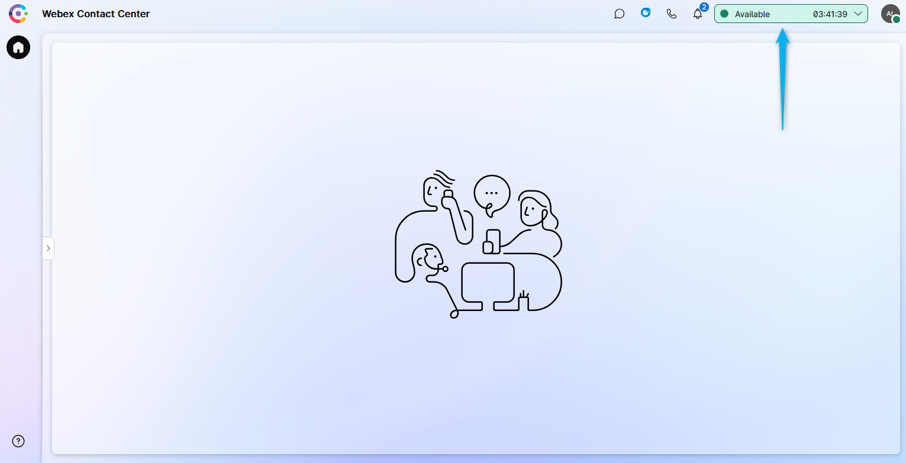

CoreTrack Mission5
🚨 Important Lab Dependency
This mission requires configuration created in the following missions:
If this mission was not completed, some steps in current mission will not function correctly.
Story
In this lab, you will complete a mission to enhance customer feedback collection by integrating a survey into the Webex Contact Center call flow. The lab is designed to be simple yet practical, focusing on minimal configuration within the Flow Designer, while leveraging a preconfigured survey template.
Good to Know [Optional]
Supported Survey Question Types in Webex Contact Center
- Customer Satisfaction (CSAT):
- Purpose: Measure satisfaction with a specific interaction or service.
- Example Question: "On a scale of 1 to 5, how satisfied are you with the service you received today?"
- Use Case: Assess overall satisfaction at the end of a call or interaction.
- Customer Effort Score (CES):
- Purpose: Evaluate the ease of resolving a customer's issue or completing a task.
- Example Question: "On a scale of 1 to 5, how easy was it to complete your task today?"
- Use Case: Identify pain points in the customer journey or process efficiency.
- Net Promoter Score (NPS):
- Purpose: Measure customer loyalty and the likelihood of recommending the service.
- Example Question: "On a scale of 0 to 10, how likely are you to recommend our service to a friend or colleague?"
- Use Case: Gauge long-term customer loyalty and brand advocacy.
Call Flow Overview
- A new call enters the flow.
- The flow executes the logic to enable survey functionality.
- Agent answers the call.
- The flow triggers an event when the agent disconnects from the call.
- The caller remains on the line and hears the survey menu.
Mission Details
Your mission is to:
- Integrate a preconfigured survey into the call flow using the Flow Designer.
- Configure basic logic to determine when to route customers to the survey (e.g., after a call ends).
- Understand how Webex Contact Center supports various survey question types, including CSAT, CES, and NPS.
Note
The survey is prebuilt and includes key questions designed to gather actionable insights from customers. Your task is to focus on configuring the flow and ensuring the survey is triggered seamlessly during the customer journey.
Preconfigured entities
- Survey: Webex CC 2025
- System defined GlobalVariable: Global_FeedbackSurveyOptIn
[Optional] In case you don't want to use preconfigured Survey you can configure your own. Expand below section to create your own Survey otherwise proceed to Build section below
Create your own Survey [Optional]
-
Download audio prompts from the shared folder.
-
In Control Hub -> Contact Center open a Survey configuration page under Customer Experience. Then click Create new survey.
-
Enter survey name as PCS_Your_Attendee_ID in Survey name field. Make sure IVR survey is selected. Then click next.
-
Edit Welcome note and Thank you note by uploading respective audio prompts to the survey.
-
Click on Add a question which is in the middle between Welcome note and Thank you note. Choose either NPS, CSAT or CES type of question and upload respective audio prompt to the survey.
-
Add more questions if you want.
-
Click Next. You can ignore Error Handling configuration page. Click Save.


Build
- Switch to the Control Hub then go to Contact Center. Navigate to the Surveys under the Customer Experience section. Locate Webex CC PCS survey and click on it to familiarise yourself with its configuration.

-
Switch to the Flow Designer. Open your Main_Flow_Your_Attendee_ID, make sure Edit toggle is ON.
-
Add Global Variable Global_FeedbackSurveyOptIn to your flow.

- Delete the connection between the NewPhoneContact node and the first Set Variable node we used to set language preference. Then drag new Set Variable node from the activity library on the left to flow canvas, put it between NewPhoneContact and existing Set Variable nodes and connect all three nodes into a chain.

-
Click on the new Set Variable node you have just added and configure the following fields:
-
Variable: Global_FeedbackSurveyOptIn
-
Set Value: true
-
-
Add a Post Call Survey functionality to the flow:
-
Open Event Flows tab and locate predefined AgentDisconected event node marked with light green crossed-out headset icon. If you completed previous mission you should have HTTP Request node connected to it.
-
Delete the connection between HTTP Request and DisconnectContact nodes.
-
Drag Feedback V2 from the activity library on the left, place it between HTTP Request and DisconnectContact nodes and connect all three nodes into a chain.
-
Click on Feedback V2 node and configure Survey Method as Voice Based and select Webex CC PCS from the dropdown list.
-
-
Let's configure the voice message that will be played to the caller if something goes wrong with Webex CC PCS survey:
-
Drag Play Message node from the activity library and place it below Feedback V2 node you have just added.
-
Connect Undefined Error output of the Feedback V2 node to the input of the Play Message node
-
Connect the output of the Play Message node to the DisconnectContact node.
Then click on the Play Message node and configure the following fields:
-
Enable Text-To-Speech
-
Connector: Cisco Cloud Text-to-Speech
-
Click the Add Text-to-Speech Message button and paste text: Something went wrong on Feedback node. Please call later.
-
Delete the selection for Audio File
-
-
Validate and publish the flow:
-
Enable the Validation toggle in the bottom right corner of the flow designer window to check for any potential flow errors and recommendations.
-
If there are no Flow Errors after validation is complete, click on Publish Flow next to it.
-
In the pop-up window, ensure that the Latest label is selected in the Add Version Label(s) list, then click Publish Flow.
-


Testing
-
Your Agent Desktop session should still be active. If it is not, launch Desktop using the cross-launch link in Control Hub.
See how to run Agent Desktop from the Control Hub
-
On your Agent Desktop, make your agent Available and you're ready to make a call.

-
Make a test call to the Support Number and accept the call by Agent.
- Finish the call by Agent, so the caller could stay on the line.
- Now the caller should hear prompts configured in Webex CC PCS. Complete the survey.
-
To check survey responses, switch to the Control Hub and navigate to the Surveys under Customer Experience section. Locate the Webex CC PCS survey and click on the Download button on the right-hand side to download a CSV file with the provided Survey responses.
Note
If you create your own survey, as described in the Optional section of this mission, you might not see the survey responses immediately, as there is a delay in edited surveys.


Congratulations, you have succesfully completed Post Call Survey mission! 🎉🎉